UM NOVO CAMINHO
PARA O FUTURO.
Política com responsabilidade, participação e compromisso com resultados. Uma atuação voltada à construção de políticas públicas responsáveis, à defesa da liberdade e à busca de soluções concretas para problemas reais.
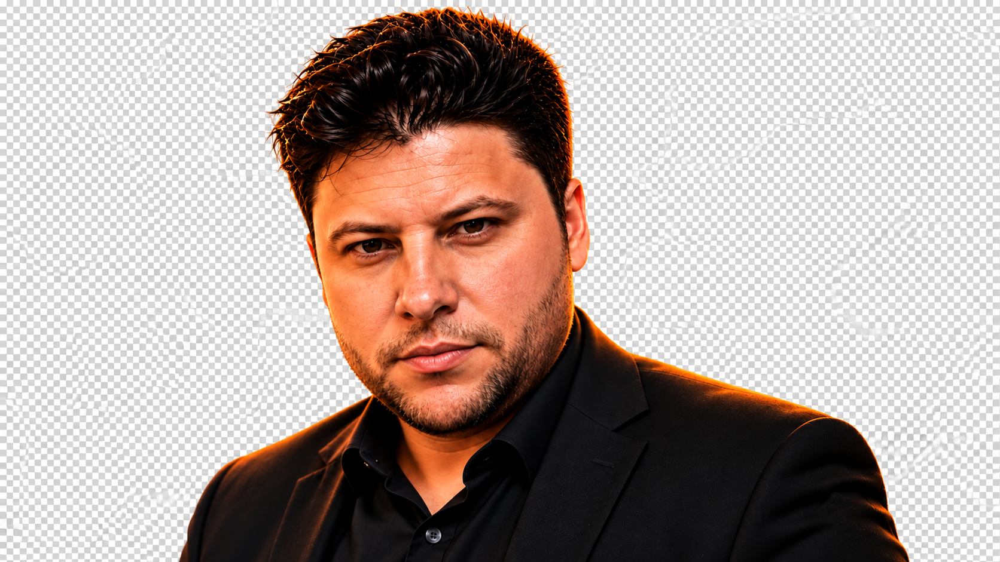
Política precisa voltar a ter propósito.
Defender uma política séria, eficiente e próxima das pessoas, com responsabilidade fiscal, liberdade, transparência e foco em resultados.
Liberdade
Respeito às escolhas individuais e às oportunidades de cada cidadão.
Responsabilidade
Gestão pública eficiente, sustentável e orientada por evidências.
Transparência
Prestação de contas, integridade e combate ao desperdício.
Resultados
Metas claras e políticas públicas avaliadas pelo impacto.
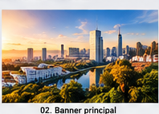
Princípios claros para um Brasil mais livre e eficiente.
O site apresenta o alinhamento de Marcos Dresbach com princípios associados ao Partido NOVO, sem se apresentar como página oficial do partido.
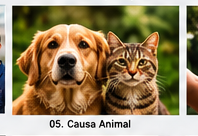
Cuidar dos animais também é cuidar das pessoas.
Uma proposta de prevenção e controle integrado de zoonoses, com foco em saúde humana, animal e ambiental.
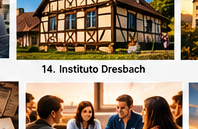
Instituto Brasileiro Dresbach
Preservação da Cultura Alemã, pesquisa histórica, genealogia e memória Wittgenstein.
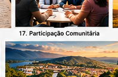
Essa construção não é individual.
Participe, envie sugestões, conheça as propostas e ajude a construir soluções.
Minha trajetória, meus valores e meu compromisso.
Uma apresentação institucional construída em torno de participação cidadã, responsabilidade e políticas públicas concretas.
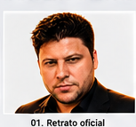
Propósito antes de discurso.
Este espaço apresenta a trajetória, os valores e os projetos que orientam a atuação pública de Marcos Dresbach. O conteúdo deve ser preenchido com a biografia oficial e validada antes da publicação definitiva.
Uma visão para um Brasil mais livre e eficiente.
Liberdade, responsabilidade, transparência, eficiência e respeito ao cidadão como eixos de posicionamento.
Liberdade
Mais autonomia, respeito às escolhas e ambiente favorável ao trabalho.
Eficiência
Serviços públicos orientados por metas, dados e avaliação.
Transparência
Prestação de contas e mecanismos de controle.
Responsabilidade
Compromisso com sustentabilidade fiscal e institucional.
Saúde Única: cuidar dos animais também é cuidar das pessoas.
Uma proposta ampla para prevenção integrada de zoonoses, vigilância, saúde animal, saúde humana e ambiente.
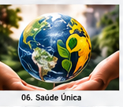
Animal → Vigilância → Ambiente → Saúde humana
A proposta conecta assistência veterinária de interesse público, vigilância e encaminhamento de pessoas potencialmente expostas, controle ambiental e produção de dados.
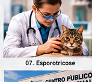
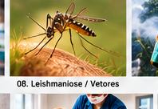
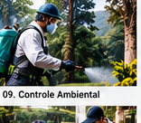
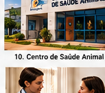
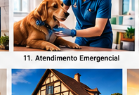
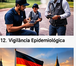
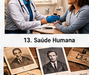
Ideias para transformar problemas em resultados.
Áreas prioritárias organizadas para facilitar o entendimento e a participação.
Saúde Única
Prevenção de zoonoses e integração entre saúde humana, animal e ambiental.
Causa Animal
Proteção, bem-estar e assistência de interesse público.
Eficiência Pública
Gestão moderna, metas e avaliação de resultados.
Liberdade
Respeito ao cidadão, trabalho e desenvolvimento.
Desenvolvimento Regional
Soluções adaptadas às necessidades dos municípios e comunidades.
Cultura e Identidade
Preservação de patrimônio, memória e história.
Educação
Investimento em pessoas e oportunidades.
Participação Comunitária
Cidadãos mais próximos das decisões públicas.
Cultura, memória e identidade.
Preservação da Cultura Alemã, pesquisa histórica, genealogia e memória Wittgenstein.
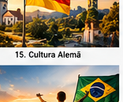
Preservar o passado para compreender o futuro.
O Instituto Brasileiro Dresbach reúne iniciativas de preservação cultural, pesquisa histórica, documentação e memória regional.
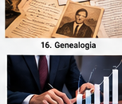
Essa construção não é individual.
Envie uma sugestão, apoie uma pauta, participe do projeto ou ajude a divulgar.
Participe das pautas.
Uma plataforma política precisa ouvir quem vive os problemas na prática.
Como você pode ajudar
Projetos, estudos e propostas.
Área preparada para disponibilizar o pacote legislativo e técnico da pauta.
Proposta legislativa estruturada.
Fundamentação e diagnóstico.
Análise de viabilidade legislativa.
Cenários e estimativas.
Estratégia de implantação.
Fontes e referências.
Fale com Marcos Dresbach.
Canal para sugestões, propostas, participação e assuntos institucionais.